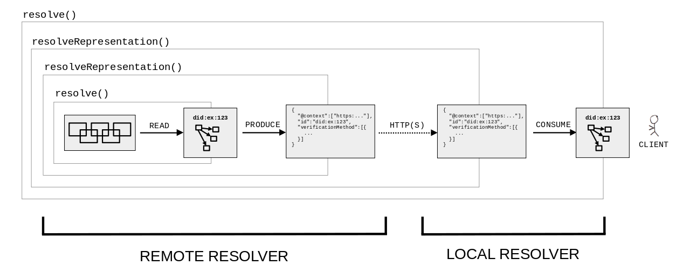

Decentralized identifiers (DIDs) are a new type of identifier for
verifiable, "self-sovereign" digital identity. DIDs are fully under the
control of the DID controller, independent from any centralized registry,
identity provider, or certificate authority. DIDs resolve to DID
Documents — simple documents that describe how to use that specific DID.
This document specifies the algorithms and guidelines for resolving DIDs
and dereferencing DID URLs.
Status of This Document
This section describes the status of this
document at the time of its publication. A list of current W3C
publications and the latest revision of this technical report can be found
in the W3C technical reports index at
https://www.w3.org/TR/.
Portions of the work on this specification have been funded by the
United States Department of Homeland Security's Science and Technology
Directorate under contracts HSHQDC-17-C-00019. The content of this
specification does not necessarily reflect the position or the policy of
the U.S. Government and no official endorsement should be inferred.
Work on this specification has also been supported by the Rebooting the
Web of Trust community facilitated by Christopher Allen, Shannon
Appelcline, Kiara Robles, Brian Weller, Betty Dhamers, Kaliya Young, Kim
Hamilton Duffy, Manu Sporny, Drummond Reed, Joe Andrieu, and Heather
Vescent.
Publication as an Editor's Draft does not
imply endorsement by W3C and its Members.
This is a draft document and may be updated, replaced or obsoleted by other
documents at any time. It is inappropriate to cite this document as other
than work in progress.
This document was produced by a group
operating under the
W3C Patent
Policy.
W3C maintains a
public list of any patent disclosures
made in connection with the deliverables of
the group; that page also includes
instructions for disclosing a patent. An individual who has actual
knowledge of a patent which the individual believes contains
Essential Claim(s)
must disclose the information in accordance with
section 6 of the W3C Patent Policy.
DID resolution is the process of obtaining a DID document for a given DID. This is one
of four required operations that can be performed on any DID ("Read"; the other ones being "Create", "Update",
and "Deactivate"). The details of these operations differ depending on the DID method.
Building on top of DID resolution, DID URL dereferencing is the process of retrieving a representation
of a resource for a given DID URL. Software and/or hardware that is able to execute these processes is called
a DID resolver.
This
specification defines common
requirements, algorithms including their inputs and results, architectural options, and various considerations for the
DID resolution and DID URL dereferencing processes.
Note that while this specification defines some base-level functionality for DID resolution, the actual steps
required to communicate with a DID's verifiable data registry are defined by the applicable
DID method specification.
Note
The difference between "resolving" a DID and "dereferencing" a DID URL
is being thoroughly discussed by the community. For example, see
this comment.
1.1 Conformance
As well as sections marked as non-normative, all authoring guidelines, diagrams, examples, and notes in this specification are non-normative. Everything else in this specification is normative.
The key words MAY, MUST, MUST NOT, OPTIONAL, RECOMMENDED, REQUIRED, and SHOULD in this document
are to be interpreted as described in
BCP 14
[RFC2119] [RFC8174]
when, and only when, they appear in all capitals, as shown here.
A conforming DID resolver is any algorithm
realized as software and/or hardware that complies with the relevant normative
statements in 3. DID Resolution.
A conforming DID URL dereferencer is any
algorithm realized as software and/or hardware that complies with the relevant
normative statements in 4. DID URL Dereferencing.
2. Terminology
This section defines the terms used in this specification and throughout
decentralized identifier infrastructure. A link to these terms is
included whenever they appear in this specification.
authenticate
Authentication is a process by which an entity can prove it has a specific
attribute or controls a specific secret using one or more verification
methods. With DIDs, a common example would be proving control of the
cryptographic private key associated with a public key published in a DID
document.
A globally unique persistent identifier that does not require a centralized
registration authority and is often generated and/or registered
cryptographically. The generic format of a DID is defined in . A specific DID scheme is defined in a DID
method specification. Many—but not all—DID methods make use of
distributed ledger technology (DLT) or some other form of decentralized
network.
DID controller
An entity that has the capability to make changes to a DID document. A
DID might have more than one DID controller. The DID controller(s)
can be denoted by the optional controller property at the top level of the
DID document. Note that a DID controller might be the DID
subject.
DID delegate
An entity to whom a DID controller has granted permission to use a
verification method associated with a DID via a DID
document. For example, a parent who controls a child's DID document
might permit the child to use their personal device in order to
authenticate. In this case, the child is the DID delegate. The
child's personal device would contain the private cryptographic material
enabling the child to authenticate using the DID. However, the child
might not be permitted to add other personal devices without the parent's
permission.
DID document
A set of data describing the DID subject, including mechanisms, such as
cryptographic public keys, that the DID subject or a DID delegate
can use to authenticate itself and prove its association with the
DID.
DID fragment
The portion of a DID URL that follows the first hash sign character
(#). DID fragment syntax is identical to URI fragment syntax.
DID method
A definition of how a specific DID method scheme is implemented. A DID method is
defined by a DID method specification, which specifies the precise operations by
which DIDs and DID documents are created, resolved, updated,
and deactivated. See .
DID path
The portion of a DID URL that begins with and includes the first forward
slash (/) character and ends with either a question mark
(?) character, a fragment hash sign (#) character,
or the end of the DID URL. DID path syntax is identical to URI path syntax.
See .
DID query
The portion of a DID URL that follows and includes the first question
mark character (?). DID query syntax is identical to URI query
syntax. See .
DID resolution
The process that takes as its input a DID and a set of resolution
options and returns a DID document in a conforming representation
plus additional metadata. This process relies on the "Read" operation of the
applicable DID method. The inputs and outputs of this process are
defined in 3. DID Resolution.
DID resolver
A DID resolver is a software and/or hardware component that performs the
DID resolution function by taking a DID as input and producing a
conforming DID document as output.
The formal syntax of a decentralized identifier. The generic DID scheme
begins with the prefix did: as defined in . Each DID method specification defines a specific
DID method scheme that works with that specific DID method. In a specific DID
method scheme, the DID method name follows the first colon and terminates with
the second colon, e.g., did:example:
DID subject
The entity identified by a DID and described by a DID document.
Anything can be a DID subject: person, group, organization, physical thing,
digital thing, logical thing, etc.
DID URL
A DID plus any additional syntactic component that conforms to the
definition in . This includes an optional DID
path (with its leading / character), optional DID query
(with its leading ? character), and optional DID fragment
(with its leading # character).
DID URL dereferencing
The process that takes as its input a DID URL and a set of input
metadata, and returns a resource. This resource might be a DID
document plus additional metadata, a secondary resource
contained within the DID document, or a resource entirely
external to the DID document. The process uses DID resolution to
fetch a DID document indicated by the DID contained within the
DID URL. The dereferencing process can then perform additional processing
on the DID document to return the dereferenced resource indicated by the
DID URL. The inputs and outputs of this process are defined in
4. DID URL Dereferencing.
A non-centralized system for recording events. These systems establish
sufficient confidence for participants to rely upon the data recorded by others
to make operational decisions. They typically use distributed databases where
different nodes use a consensus protocol to confirm the ordering of
cryptographically signed transactions. The linking of digitally signed
transactions over time often makes the history of the ledger effectively
immutable.
resource
As defined by [RFC3986]: "...the term 'resource' is used in a general sense
for whatever might be identified by a URI." Similarly, any resource might serve
as a DID subject identified by a DID.
representation
As defined for HTTP by [RFC7231]: "information that is intended to reflect a
past, current, or desired state of a given resource, in a format that can be
readily communicated via the protocol, and that consists of a set of
representation metadata and a potentially unbounded stream of representation
data." A DID document is a representation of information describing a
DID subject. See .
Means of communicating or interacting with the DID subject or
associated entities via one or more service endpoints.
Examples include discovery services, agent services, social networking
services, file storage services, and verifiable credential repository services.
service endpoint
A network address, such as an HTTP URL, at which services operate on
behalf of a DID subject.
A system that facilitates the creation, verification, updating, and/or
deactivation of decentralized identifiers and DID documents. A
verifiable data registry might also be used for other
cryptographically-verifiable data structures such as verifiable
credentials. For more information, see the W3C Verifiable Credentials
specification [VC-DATA-MODEL].
verification method
A set of parameters that can be used together with a process to independently
verify a proof. For example, a cryptographic public key can be used as a
verification method with respect to a digital signature; in such usage, it
verifies that the signer possessed the associated cryptographic private key.
"Verification" and "proof" in this definition are intended to apply broadly. For
example, a cryptographic public key might be used during Diffie-Hellman key
exchange to negotiate a shared symmetric key for encryption. This guarantees the
integrity of the key agreement process. It is thus another type of verification
method, even though descriptions of the process might not use the words
"verification" or "proof."
The resolve function returns the DID document in its
abstract form (a map). The
resolveRepresentation function returns a byte stream of the DID
Document formatted in the corresponding representation.
The upper middle part of the diagram contains a rectangle with dashed grey outline, containing two
blue-outlined rectangles, one above the other.
The upper, larger rectangle is labeled, in blue, "Core Properties", and contains the following
INFRA notation:
The lower, smaller rectangle is labeled, in blue, "Core Representation-specific Entries (JSON-LD)", and
contains the following monospaced INFRA notation:
«[ "@context" → "https://www.w3.org/ns/did/v1" ]»
From the grey-outlined rectangle, three pairs of arrows extend to three
different black-outlined rectangles, aligned in a horizontal row side-by-side, in the bottom half
of the diagram. Each pair of arrows consists of
one blue arrow pointing from the grey-outlined rectangle to the respective
black-outlined rectangle, labeled "produce", and one red arrow pointing in the
reverse direction, labeled "consume". The first black-outlined rectangle in the row
is labeled "application/did+ld+json", and contains
the following JSON-LD data:
The third rectangle in the row is labeled "application/did+cbor", and contains hexadecimal data.
In the left part of the diagram, in the middle, there is a box, with black outline and light gray
background. This box is labeled "VERIFIABLE DATA REGISTRY" and contains a symbol representing a graph
with nodes and arcs. From this box, one arrow, labeled "resolve()", extends upwards and points to the
top half of the diagram where the grey-outlined rectangle is located. Another arrow, labeled
"resolveRepresentation()", extends downwards and points to the bottom half of the diagram, where the
row of three black-outlined rectangles is located.
Conforming DID resolver implementations do not alter the signature of
these functions in any way. DID resolver implementations might map the
resolve and resolveRepresentation functions to a
method-specific internal function to perform the actual DID resolution
process. DID resolver implementations might implement and expose
additional functions with different signatures in addition to the
resolve and resolveRepresentation functions specified
here.
The input variables
of the resolve and resolveRepresentation functions are
as follows:
did
This is the DID to resolve. This input is REQUIRED and the value MUST
be a conformant DID as defined in .
A metadata structure consisting of values
relating to the results of the DID resolution process which typically
changes between invocations of the resolve and
resolveRepresentation functions, as it represents data about the
resolution process itself. This structure is REQUIRED, and in the case of an
error in the resolution process, this MUST NOT be empty. This metadata is
defined by 3.2 DID Resolution Metadata. If
resolveRepresentation was called, this structure MUST contain a
contentType property containing the Media Type of the
representation found in the didDocumentStream. If the resolution is
not successful, this structure MUST contain an error property
describing the error.
didDocument
If the resolution is successful, and if the resolve function was
called, this MUST be a DID document abstract data model (a map) as described in that
is capable of being transformed into a conforming DID Document
(representation), using the production rules specified by the representation.
The value of id in the resolved DID documentMUST
match the DID that was resolved. If the resolution is unsuccessful, this
value MUST be empty.
didDocumentStream
If the resolution is successful, and if the resolveRepresentation
function was called, this MUST be a byte stream of the resolved DID
document in one of the conformant
representations. The byte stream might then be
parsed by the caller of the resolveRepresentation function into a
data model, which can in turn be validated and
processed. If the resolution is unsuccessful, this value MUST be an empty
stream.
didDocumentMetadata
If the resolution is successful, this MUST be a metadata structure. This structure contains
metadata about the DID document contained in the didDocument
property. This metadata typically does not change between invocations of the
resolve and resolveRepresentation functions unless the
DID document changes, as it represents metadata about the DID
document. If the resolution is unsuccessful, this output MUST be an empty metadata structure. Properties defined by this
specification are in 3.3 DID Document Metadata.
3.1 DID Resolution Options
The possible properties within this structure and their possible values are
registered in the DID Specification Registries [DID-SPEC-REGISTRIES]. This
specification defines the following common properties.
accept
The Media Type of the caller's preferred representation of the DID
document. The Media Type MUST be expressed as an ASCII string. The DID resolver implementation SHOULD use this
value to determine the representation contained in the returned
didDocumentStream if such a representation is supported and
available. This property is OPTIONAL for the resolveRepresentation
function and MUST NOT be used with the resolve function.
3.2 DID Resolution Metadata
The possible properties within this structure and their possible values are
registered in the DID Specification Registries [DID-SPEC-REGISTRIES]. This
specification defines the following DID resolution metadata properties:
contentType
The Media Type of the returned didDocumentStream. This property is
REQUIRED if resolution is successful and if the
resolveRepresentation function was called.
This property MUST NOT
be present if the resolve function was called. The value of this
property MUST be an ASCII string that is the Media
Type of the conformant representations. The
caller of the resolveRepresentation function MUST use this value
when determining how to parse and process the didDocumentStream
returned by this function into the data model.
error
The error code from the resolution process. This property is REQUIRED when there
is an error in the resolution process. The value of this property MUST be a
single keyword ASCII string. The possible property
values of this field SHOULD be registered in the DID Specification Registries
[DID-SPEC-REGISTRIES]. This specification defines the following
common error values:
invalidDid
The DID supplied to the DID resolution function does not conform
to valid syntax. (See .)
This error code is returned if the representation requested via the
accept input metadata property is not supported by the DID
method and/or DID resolver implementation.
3.3 DID Document Metadata
The possible properties within this structure and their possible values SHOULD
be registered in the DID Specification Registries [DID-SPEC-REGISTRIES].
This specification defines the following common properties.
created
DID document metadata SHOULD include a created property to
indicate the timestamp of the Create operation.
The value of the property MUST be a string
formatted as an XML Datetime
normalized to UTC 00:00:00 and without sub-second decimal precision. For
example: 2020-12-20T19:17:47Z.
updated
DID document metadata SHOULD include an updated property to
indicate the timestamp of the last Update
operation for the document version which was resolved. The value of the
property MUST follow the same formatting rules as the created
property. The updated property is omitted if an Update operation
has never been performed on the DID document. If an updated
property exists, it can be the same value as the created property
when the difference between the two timestamps is less than one second.
deactivated
If a DID has been deactivated,
DID document metadata MUST include this property with the boolean value
true. If a DID has not been deactivated, this property is OPTIONAL,
but if included, MUST have the boolean value false.
nextUpdate
DID document metadata MAY include a nextUpdate property if
the resolved document version is not the latest version of the document. It
indicates the timestamp of the next Update
operation. The value of the property MUST follow the same formatting rules
as the created property.
versionId
DID document metadata SHOULD include a versionId property to
indicate the version of the last Update
operation for the document version which was resolved. The value of the
property MUST be an ASCII string.
nextVersionId
DID document metadata MAY include a nextVersionId property
if the resolved document version is not the latest version of the document. It
indicates the version of the next Update
operation. The value of the property MUST be an ASCII string.
equivalentId
A DID method can define different forms of a DID that are
logically equivalent. An example is when a DID takes one form prior to
registration in a verifiable data registry and another form after such
registration. In this case, the DID method specification might need to
express one or more DIDs that are logically equivalent to the resolved
DID as a property of the DID document. This is the purpose of the
equivalentId property.
DID document metadata MAY include an equivalentId property.
If present, the value MUST be a set where each item is a
string that conforms to the rules in Section . The relationship is a statement that each
equivalentId value is logically equivalent to the
id property value and thus refers to the same DID subject.
Each equivalentId DID value MUST be produced by, and a form
of, the same DID method as the id property value. (e.g.,
did:example:abc == did:example:ABC)
A conforming DID method specification MUST guarantee that each
equivalentId value is logically equivalent to the
id property value.
A requesting party is expected to retain the values from the id and
equivalentId properties to ensure any subsequent
interactions with any of the values they contain are correctly handled as
logically equivalent (e.g., retain all variants in a database so an interaction
with any one maps to the same underlying account).
If a requesting party does not retain the values from the id and
equivalentId properties and ensure any subsequent
interactions with any of the values they contain are correctly handled as
logically equivalent, there might be negative or unexpected issues that
arise. Implementers are strongly advised to observe the
directives related to this metadata property.
canonicalId
The canonicalId property is identical to the
equivalentId property except: a) it is associated with a
single value rather than a set, and b) the DID is defined to be
the canonical ID for the DID subject within the scope of the containing
DID document.
DID document metadata MAY include a canonicalId property.
If present, the value MUST be a string that conforms to the rules in Section . The relationship is a statement that the
canonicalId value is logically equivalent to the
id property value and that the canonicalId
value is defined by the DID method to be the canonical ID for the DID
subject in the scope of the containing DID document. A
canonicalId value MUST be produced by, and a form of, the
same DID method as the id property value. (e.g.,
did:example:abc == did:example:ABC).
A conforming DID method specification MUST guarantee that the
canonicalId value is logically equivalent to the
id property value.
A requesting party is expected to use the canonicalId value
as its primary ID value for the DID subject and treat all other
equivalent values as secondary aliases (e.g., update corresponding primary
references in their systems to reflect the new canonical ID directive).
If a resolving party does not use the canonicalId value as
its primary ID value for the DID subject and treat all other equivalent values
as secondary aliases, there might be negative or unexpected issues that arise
related to user experience. Implementers are strongly advised to observe the
directives related to this metadata property.
Determine whether the DID method of the input DID is supported by the DID resolver
that implements this algorithm. If not, the DID resolverMUST return the following result:
Specify how signatures/proofs on a DID document should be verified during the
DID resolution process.
Issue
Should we define functionality that enables discovery of the list of DID methods or other
capabilities that are supported by a DID resolver? Or is this implementation-specific and out-of-scope
for this spec? For example, see here and
here.
4. DID URL Dereferencing
The DID URL dereferencing function dereferences a DID URL into a
resource with contents depending on the DID URL's components,
including the DID method, method-specific identifier, path, query, and
fragment. This process depends on DID resolution of the DID
contained in the DID URL. DID URL dereferencing might involve
multiple steps (e.g., when the DID URL being dereferenced includes a fragment),
and the function is defined to return the final resource after all steps are
completed. The following figure depicts the relationship described
above.
The top left part of the diagram contains a rectangle with black outline, labeled "DID".
The bottom left part of the diagram contains a rectangle with black outline, labeled "DID URL".
This rectangle contains four smaller black-outlined rectangles, aligned in a horizontal row adjacent to
each other. These smaller rectangles are labeled, in order, "DID", "path", "query", and "fragment.
The top right part of the diagram contains a rectangle with black outline, labeled "DID document".
This rectangle contains three smaller black-outlined rectangles. These smaller rectangles are
labeled "id", "(property X)", and "(property Y)", and are surrounded by multiple series of three
dots (ellipses). A curved black arrow, labeled "DID document - relative fragment dereference", extends
from the rectangle labeled "(property X)", and points to the rectangle labeled "(property Y)".
The bottom right part of the diagram contains an oval shape with black outline, labeled "Resource".
A black arrow, labeled "resolves to a DID document", extends from the rectangle in the top left part of
the diagram, labeled "DID", and points to the rectangle in the top right part of diagram, labeled
"DID document".
A black arrow, labeled "refers to", extends from the rectangle in the top right part of the diagram,
labeled "DID document", and points to the oval shape in the bottom right part of diagram, labeled
"Resource".
A black arrow, labeled "contains", extends from the small rectangle labeled "DID" inside the
rectangle in the bottom left part of the diagram, labeled "DID URL", and points to the rectangle
in the top left part of diagram, labeled "DID".
A black arrow, labeled "dereferences to a DID document", extends from the rectangle in the bottom left
part of the diagram, labeled "DID URL", and points to the rectangle in the top right part of diagram,
labeled "DID document".
A black arrow, labeled "dereferences to a resource", extends from the rectangle in the bottom left
part of the diagram, labeled "DID URL", and points to the oval shape in the bottom right part of diagram,
labeled "Resource".
All conforming DID resolvers implement
the following function which has the following abstract form:
While it is valid for any didUrl to be passed to a DID URL
dereferencer, implementers are expected to refer to 4. DID URL Dereferencing to
further understand common patterns for how a DID URL is expected
to be dereferenced.
dereferencingOptions
A metadata structure consisting of input
options to the dereference function in addition to the
didUrl itself. Properties defined by this specification are in 4.1 DID URL Dereferencing Options. This input is REQUIRED, but the
structure MAY be empty.
This function returns multiple values, and no limitations
are placed on how these values are returned together.
The return values of the dereference include
dereferencingMetadata, contentStream,
and contentMetadata:
dereferencingMetadata
A metadata structure consisting of values
relating to the results of the DID URL dereferencing process. This
structure is REQUIRED, and in the case of an error in the dereferencing process,
this MUST NOT be empty. Properties defined by this specification are in 4.2 DID URL Dereferencing Metadata. If the dereferencing is not
successful, this structure MUST contain an error property
describing the error.
contentStream
If the dereferencing function was called and successful, this MUST
contain a resource corresponding to the DID URL. The
contentStreamMAY be a resource such as a DID
document that is serializable in one of the conformant
representations, a verification
method, a service, or any other resource format that
can be identified via a Media Type and obtained through the resolution process.
If the dereferencing is unsuccessful, this value MUST be empty.
contentMetadata
If the dereferencing is successful, this MUST be a
metadata structure, but the structure MAY be empty. This structure contains
metadata about the contentStream. If the contentStream
is a DID document, this MUST be a didDocumentMetadata structure as
described in DID Resolution. If the dereferencing is unsuccessful, this
output MUST be an empty metadata structure.
Conforming DID URL dereferencing implementations do not alter the
signature of these functions in any way. DID URL dereferencing
implementations might map the dereference function to a
method-specific internal function to perform the actual DID URL
dereferencing process. DID URL dereferencing implementations might
implement and expose additional functions with different signatures in addition
to the dereference function specified here.
4.1 DID URL Dereferencing Options
The possible properties within this structure and their possible values SHOULD
be registered in the DID Specification Registries [DID-SPEC-REGISTRIES].
This specification defines the following common properties for
dereferencing options:
accept
The Media Type that the caller prefers for contentStream. The Media
Type MUST be expressed as an ASCII string. The
DID URL dereferencing implementation SHOULD use this value to determine
the contentType of the representation contained in the
returned value if such a representation is supported and available.
4.2 DID URL Dereferencing Metadata
The possible properties within this structure and their possible values are
registered in the DID Specification Registries [DID-SPEC-REGISTRIES]. This
specification defines the following common properties.
contentType
The Media Type of the returned contentStreamSHOULD be expressed
using this property if dereferencing is successful. The Media
Type value MUST be expressed as an ASCII string.
error
The error code from the dereferencing process. This property is REQUIRED when
there is an error in the dereferencing process. The value of this property
MUST be a single keyword expressed as an ASCII
string. The possible property values of this field SHOULD be registered in
the DID Specification Registries [DID-SPEC-REGISTRIES]. This specification
defines the following common error values:
The DID URL dereferencer was unable to find the
contentStream resulting from this dereferencing request.
4.3 Algorithm
The following DID URL dereferencing algorithm MUST be implemented by a conformant DID resolver.
In accordance with [RFC3986], it consists of the following three steps: resolving the DID; dereferencing the
resource; and dereferencing the fragment (only if the input DID URL contains a DID fragment):
From the resolved DID document, select the
service endpoint whose id
property contains a fragment which matches the value of the service DID parameter of the
input DID URL. This is called the input service endpoint.
There have been discussions whether in addition to the DID parameter service,
there could also be a DID parameter serviceType to select services based
on their type rather than ID.
See
comments by Dave Longley about serviceType.
Otherwise, dereference the DID fragment as defined by the media type ([RFC2046]) of the resource.
For example, if the resource is a representation of a DID document with media type application/did, then
the fragment is treated according to the rules associated with the
JSON-LD 1.1: application/ld+json media type
[JSON-LD11].
Note
This use of the DID fragment is consistent with the definition of the fragment identifier in
[RFC3986]. It identifies a secondary resource which is a subset of the primary resource
(the DID document).
Note
This behavior of the DID fragment is analogous to the handling of a fragment in an HTTP URL in the
case when dereferencing it returns an HTTP 3xx (Redirection) response with a
Location header (see section 7.1.2 of [RFC7231].
Figure 3
Dereferencing a DID URL to a service endpoint URL.
Issue
Change the diagram and/or examples to make them consistent.
5. Metadata Structure
Input and output metadata is often involved during the DID Resolution,
DID URL dereferencing, and other DID-related processes. The structure
used to communicate this metadata MUST be a map
of properties. Each property name MUST be a string. Each property value MUST be a string, map, list, set,
boolean, or
null. The values within any complex data
structures such as maps and lists MUST be one of these data types as well.
All metadata property definitions registered in the DID Specification
Registries [DID-SPEC-REGISTRIES] MUST define the value type, including any
additional formats or restrictions to that value (for example, a string
formatted as a date or as a decimal integer). It is RECOMMENDED that property
definitions use strings for values. The entire metadata structure MUST be
serializable according to the JSON
serialization rules in the [INFRA] specification. Implementations MAY
serialize the metadata structure to other data formats.
All implementations of functions that use metadata structures as either input or
output are able to fully represent all data types described here in a
deterministic fashion. As inputs and outputs using metadata structures are
defined in terms of data types and not their serialization, the method for
representation is internal to the implementation of the function and is
out of scope of this specification.
The following example demonstrates a JSON-encoded metadata structure that
might be used as DID
resolution input metadata.
Example 10: JSON-encoded DID resolution input metadata example
{"accept":"application/did+ld+json"}
This example corresponds to a metadata structure of the following format:
The next example demonstrates a JSON-encoded metadata structure that might be
used as DID document metadata
to describe timestamps associated with the DID document.
Example 14: JSON-encoded DID document metadata example
TODO: Describe how DID resolvers are implemented and used, describe the relevance
of DID methods.
Explain the difference between "method architectures" and "resolver architectures".
... interaction with a remote network is required during execution of the "Read" operation.
... an actual DID document is stored in plain-text on a verifiable data registry,
or that the DID document can simply be retrieved via a standard protocol such as HTTP(S).
While some DID methods may define their "Read" operation this way, others may
define more complex multi-step processes that involve on-the-fly construction of a "virtual" DID document.
Issue
As an example, mention what it means to "resolve" peer/off-ledger/microledger/edgechain DIDs (for instance, see
[DID-PEER] and
here).
Issue
As an example, mention what it means to "resolve" DIDs that are simply wrapped public keys (for instance, see
[DID-KEY] and
here).
A verifiable read maximizes confidence in the integrity and correctness of the result of the "Read" operation ‐ to the extent
possible under the applicable DID method. It can be implemented in a variety of ways, for example:
A "Read" operation may be considered "Verifiable" if access to the verifiable data registry is
possible via a local, trusted network host. In the case of blockchain-based DID methods, a blockchain full node
may be run on a local network host in order to implement a verifiable read.
The DID resolver may be remotely connected to the verifiable data registry but have some method
to verify the contents of the response of the "Read" operation. In the case of blockchain-based DID methods, even if
direct access to a blockchain full node is not available, a verifiable read may still be possible by running a light client that
processes metadata to verify that the result of the "Read" operation hasn't been tampered with.
A verifiable read may be implemented if access to the verifiable data registry happens via a remote
network host that is considered trusted because it is run on a personal device in the home and accessed via
a secure channel.
An unverifiable read does not have such guarantees and is therefore less desirable, for example:
A "Read" operation may be considered "Unverifiable" if access to the verifiable data registry happens
via a remote, untrusted intermediary. In the case of blockchain-based DID methods, a remote blockchain explorer API
operated by an third party may be used to look up data from the blockchain.
Whether or not a verifiable read is possible depends not only on a DID method itself, but also on the way how
a DID resolver implements it. DID methodsMAY define multiple different ways of implementing their "Read"
operation(s) and SHOULD offer guidance on how to implement a verifiable read in at least one way.
Note
The guarantees associated with a verifiable read are still always limited by the architectures, protocols, cryptography,
and other aspects of the underlying verifiable data registry. The strongest forms of verifiable read
implementations are considered those that do not require any interaction with a remote network at all (for example, see
[DID-KEY]), or that minimize dependencies on specific network infrastructure and reduce the "root of trust"
to proven entropy and cryptography alone (for example, see [KERI]).
Issue
TODO: Describe how a client can potentially verify the result of a "Read" operation independently even if it does
not trust the DID resolver (e.g., using state proofs).
TODO: Discuss DID resolution in constrained user agents such as mobile apps and browsers.
The following diagram shows how the resolve() and resolveRepresentation() functions
use production and consumption rules of DID document representation can apply in an architecture that involves
both a local resolver and a remote resolver.

Figure 9
Production and consumption in an architecture that involves both
a local and a remote DID resolver.
This is similar to a "stub resolver" invoking a "recursive resolver" in DNS architecture, although
the concepts are not entirely comparable (DNS Resolution uses a single concrete protocol, whereas DID resolution
is an abstract function realized by different DID methods and different bindings).
This metadata typically does not change between invocations of the DID Resolution function unless the DID document changes, as it represents data about the DID document.
For certain data, it may be debatable whether it should be part of the DID document
(i.e., data that describes the DID Subject), or whether it is metadata (i.e., data about the DID document or about
the DID resolution process). For example the URL of the "Continuation DID document" in the BTCR method.
This metadata typically changes between invocations of the DID URL Dereferencing functions as it represents data about the dereferencing process itself.
Issue
Add more details how DID URL dereferencing metadata works.
This is a metadata structure (see section Metadata Structure
in [DID-CORE]) that contains metadata about the content.
This metadata typically does not change between invocations of the DID URL Dereferencing function unless the content changes, as it represents data about the content.
Issue
Add more details how content metadata works.
9. Errors
9.1 invalidDid
If an invalid DID is detected during DID Resolution,
the value of the DID Resolution Metadata error property MUST be invalidDid
as defined in section DID Resolution Metadata in [DID-CORE].
If a DID method is not supported during DID Resolution or DID URL dereferencing,
the value of the DID Resolution or DID URL Dereferencing Metadata error property MUST be methodNotSupported.
9.6 internalError
When an unexpected error occurs during DID Resolution or DID URL dereferencing,
the value of the DID Resolution or DID URL Dereferencing Metadata error property MUST be internalError.
9.7 invalidPublicKey
If an invalid public key value is detected during DID Resolution or DID URL dereferencing,
the value of the DID Resolution or DID URL Dereferencing Metadata error property MUST be invalidPublicKey.
9.8 invalidPublicKeyLength
If the byte length of rawPublicKeyBytes does not match the expected public key length for the associated multicodecValue during DID Resolution or DID URL dereferencing,
the value of the DID Resolution or DID URL Dereferencing Metadata error property MUST be invalidPublicKeyLength.
9.9 invalidPublicKeyType
If an invalid public key type is detected during DID Resolution or DID URL dereferencing,
the value of the DID Resolution or DID URL Dereferencing Metadata error property MUST be invalidPublicKeyType.
9.10 unsupportedPublicKeyType
If an unsupported public key type is detected during DID Resolution or DID URL dereferencing,
the value of the DID Resolution or DID URL Dereferencing Metadata error property MUST be unsupportedPublicKeyType.
The HTTP(S) binding is a remote binding. It requires a known HTTP(S) URL where a remote
DID resolver can be invoked. This URL is called the DID resolver HTTP(S) endpoint
Set the AcceptHTTP request header to application/ld+json;profile="https://w3id.org/did-resolution"
in order to request a complete 7. DID Resolution Result, OR
set the AcceptHTTP request header to the value of the acceptresolution option.
Set the AcceptHTTP request header to application/ld+json;profile="https://w3id.org/did-url-dereferencing"
in order to request a complete 8. DID URL Dereferencing Result, OR
set the AcceptHTTP request header to the value of the acceptdereferencing option.
If the DID resolution or DID URL dereferencing function returns an error metadata property in the
didResolutionMetadata or dereferencingMetadata,
then the HTTP response status code MUST correspond to the value of the error metadata property,
according to the following table:
error
HTTP status code
invalidDid
400
invalidDidUrl
400
notFound
404
representationNotSupported
406
methodNotSupported
501
internalError
500
(any other value)
500
If the DID resolution or DID URL dereferencing function returns a deactivated metadata property with
the value true in the didDocumentMetadata or contentMetadata:
If the function is successful and returns a didDocument:
The HTTP response status code MUST be 200.
The HTTP response MUST contain a Content-TypeHTTP response header. Its value MUST be the value of the
contentType metadata property in the didResolutionMetadata (see 3.2 DID Resolution Metadata).
The HTTP response body MUST contain the didDocument that is the result of the
DID resolution function, in the representation corresponding to the Content-TypeHTTP response header.
If the function is successful and returns a contentStream and a contentType metadata property with the value text/uri-list in the dereferencingMetadata:
The HTTP response status code MUST be 303.
The HTTP response MUST contain an Location header. The value of this header
MUST be the output service endpoint URL.
the HTTP response body MUST be empty.
If the function is successful and returns a contentStream with any other contentType:
The HTTP response status code MUST be 200.
The HTTP response MUST contain a Content-TypeHTTP response header. Its value MUST be the value of the
contentType metadata property in the dereferencingMetadata (see 4.2 DID URL Dereferencing Metadata).
The HTTP response body MUST contain the contentStream that is the result of the
DID URL dereferencing function, in the representation corresponding to the Content-TypeHTTP response header.
We could potentially allow query components on both the
input DID URL and input service endpoint URL, if they both contain lists of
key/value parameters that can be merged.
Issue
Details of the Service Endpoint Construction algorithm have been discussed in April 2019
on the CCG mailing list, e.g., here
or here.
Issue
Instead of defining our own algorithm, we could potentially re-use the "Relative Resolution"
algorithm defined in [RFC3986].
DID resolution and DID URL dereferencing do not involve any authentication or authorization
functionality. Similar to DNS resolution, anybody can perform the process, without requiring any credentials
or non-public knowledge.
The spec should clarify whether or not conformant resolvers MUST be public or MAY restrict access via some authentication and authorization scheme.
The current language doesn't make it clear if authentication is just out of scope or if it is disallowed.
Issue
Explain that DIDs are not necessarily globally resolvable, such as pairwise or N-wise
"peer" DIDs.
See [RFC3339]:
URIs have a global scope and are interpreted consistently regardless of context, though the
result of that interpretation may be in relation to the end-user's context.
An advanced idea is that the result of DID resolution could be contextual or depend on policies,
see this comment.
Issue
A related topic is whether (parts of) DID document could be encrypted, e.g.,
w3c/did-core/issues/25. Also see the use
of the fragment in the IPID DID method.
Caching behavior can be controlled by configuration of the DID resolver,
by the noCache resolution option, or by contents of the DID document
(e.g., a cacheMaxTtl field), or by a combination of these properties.
The use of the versionId DID parameter is specific to the DID method.
Its possible values may include sequential numbers, random UUIDs, content hashes, etc..
DID document metadata MAY contain a versionId
property that changes with each Update operation that is performed
on a DID document.
There is discussion on the relationship between DID resolution and
resolution of non-DID identifiers such as domain names, HTTP URIs, or e-mail addresses. This includes the
questions how DIDs can be discovered from non-DID identifiers, and how links between identifiers can
be verifiable.
Describe which methods a DID resolver should support, and potential implications.
13. Future Work
Note
This section lists additional DID URL dereferencing features that are under discussion and
have not yet been incorporated into the algorithm.
13.1 Redirect
A service endpoint may have
a serviceEndpoint property with a value that is itself
a DID. This is interpreted as a "DID redirect" from the input DID to another. In this case, a "child"
DID resolution process can be launched to get to a "final" service endpoint.
The follow-redirect resolution option can be supplied by a client as a hint to
instruct whether redirects should be followed. This resolution option is OPTIONAL.
Keeping track of a proposal here w3c-ccg/did-spec#90 (comment) that a DID Document could contain a "proxy" service type which would provide a mapping that needs to be followed in order to resolve to a final service URL.
Peer DID Method Specification. Oskar Deventer; Christian Lundkvist; Márton Csernai; Kyle Den Hartog; Markus Sabadello; Sam Curren; Dan Gisolfi; Mike Varley; Sven Hammann; John Jordan; Lovesh Harchandani; Devin Fisher; Tobias Looker; Brent Zundel; Stephen Curran. 10 July 2020. W3C Editor's Draft. URL: https://identity.foundation/peer-did-method-spec/